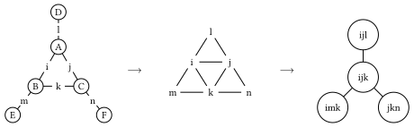
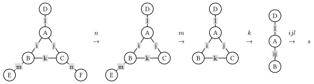

Tensor Network Contraction Order Optimization
Tensor network
Tensor network is a powerful tool for modeling and simulating quantum many-body systems, probabilistic inference, combinatorial optimization, etc. To understand the basic concepts of tensor network, we recommend the following references for readers with different background:
- For readers with physics background: https://tensornetwork.org/diagrams/
- For readers want to get a formal definition: Chapter 2 of https://epubs.siam.org/doi/abs/10.1137/22M1501787
Contraction order and complexity
Contraction order is a key factor for the performance of tensor network contraction (Note: contraction to tensor network is matrix multiplication to matrices). The quality of the contraction order is quantified by the contraction complexity, which is determined by the chosen contraction order represented by a binary tree. Finding the optimal contraction order, i.e., the contraction order with minimal complexity, is related to the NP-complete problem of finding the tree decomposition with minimal treewidth [Markov2008]. Luckily, a close-to-optimal contraction order is usually acceptable, which could be found in a reasonable time with a heuristic optimizer. In the past decade, methods have been developed to optimize the contraction orders, including both exact ones and heuristic ones. Among these methods, multiple heuristic methods can handle networks with more than $10^4$ tensors efficiently [Gray2021], [Roa2024].
For simplicity, in the following sections, we will use the einsum notation in OMEinsum.jl to represent the tensor network contraction: $R_{i,j,k,...} = \sum_{a, b, c, ...} A_{a,...}B_{b,...}...$ It is easy to see that the most direct way to calculate the result is to loop over all the indices naively, which requires $O(d^N)$ operations, where $d$ is the dimension of the index and $N$ is the number of indices. However, such a direct calculation is not efficient. Considering the following simple tensor network:
where the tensors are represented by the circles and the indices are represented by the lines, representing the following contraction to scalar $s$: $s = \sum_{i,j,k,l} A_{ij} B_{ik} C_{jl} D_{lk},$ and can be represented as the following Einstein summation formula:
julia> using OMEinsum
julia> einsum = ein"ij, ik, jl, lk -> "
ij, ik, jl, lk ->where pointing to nothing means the result is a scalar. Here we simply assume that all indices are of the same dimension $D$. Then the naive way to calculate the result is to loop over all the indices, which requires $O(D^4)$ operations and no intermediate tensors are produced.
However, another way to calculate $s$ is shown below:

where we first contract $A$ and $B$ to get $AB$, and contract $C$ and $D$ to get $CD$, which are rank-2 intermediate tensors, and then contract $AB$ with $CD$ to get the scalar $s$. That is equivalent to the following Einstein summation formula:
julia> nested_ein = ein"(ij, ik), (jl, lk) -> "
jk, jk ->
├─ ij, ik -> jk
│ ├─ ij
│ └─ ik
└─ jl, lk -> jk
├─ jl
└─ lkIn this way, the total number of operations is $O(2 D^{3} + D^{2})$, which is smaller than the naive calculation, while the trade-off is that we need to store the intermediate tensors $AB$ and $CD$ with size of $O(D^{2})$, as shown below:
# here we take D = 16
julia> size_dict = uniformsize(einsum, 2^4)
julia> contraction_complexity(einsum, size_dict)
Time complexity: 2^16.0
Space complexity: 2^0.0
Read-write complexity: 2^10.001408194392809
julia> contraction_complexity(nested_ein, size_dict)
Time complexity: 2^13.044394119358454
Space complexity: 2^8.0
Read-write complexity: 2^11.000704269011246We say such a contraction is with time complexity of $O(D^{3})$ and space complexity of $O(D^{4})$, which are defined as follows:
- time complexity: the number of Floating Point operations required to calculate the result;
- space complexity: the largest size of the intermediate tensors. For larger tensor networks, the contraction order is important, since it can greatly reduce the time complexity of the calculation.
- read-write complexity: the number of times the intermediate tensors are read and written.
In actual calculation, we prefer binary contractions, i.e., contracting two tensors at a time, by converting these two tensors as matrices, so that we can make use of BLAS libraries to speed up the calculation. In this way, a given contraction order can be represented as a binary tree. The contraction tree can be represented as a rooted tree, where the leaves are the tensors to be contracted and the internal nodes are the intermediate tensors. The contraction tree corresponding to the above example is shown below:

Generally speaking, our target is to find a binary contraction order, with minimal time complexity or space complexity, which is called the optimal contraction order.
Tree decomposition and tree width
In the previous section, we introduce the concept of tensor network and its contraction order, so that now you should understand why the contraction order so important. Then the next question is how to find the optimal contraction order.
In our work, we propose to use the tree decomposition of the line graph of the hypergraph representation of the tensor network to find the optimal contraction order, according to the following well known theoremMarkov :
Theorem 1. Let $C$ be a quantum circuit with $T$ gates and whose underlying circuit graph is $G_c$. Then $C$ can be simulated deterministically in time $T^{O(1)} e^{O(tw(G_C))}$, where $tw(G_C)$ is the treewidth of $G_C$.
Using the language of tensor network, we can rewrite the above theorem as follows: the bottleneck of time complexity of the contraction of a tensor network is $O(e^{O(tw(L(G)))})$, where $L(G)$ is the line graph of the hypergraph representation of the tensor network. Therefore, if we can find the tree decomposition of the tensor network with minimal treewidth, we can find the optimal contraction order of the tensor network.
Line graph
A formal definition of the line graph is as follows:
Definition 1. Given a graph G, its line graph $L(G)$ is a graph such that:
- each vertex of $L(G)$ represents an edge of $G$;
- two vertices of $L(G)$ are adjacent if and only if their corresponding edges share a common endpoint ("are incident") in $G$.
That is, it is the intersection graph of the edges of G, representing each edge by the set of its two endpoints.
For a tensor network, we can construct a hypergraph $G$ whose vertices are the tensors and whose hyperedges are the indices. Then the line graph $L(G)$ of the hypergraph $G$ is the graph whose vertices are the indices and whose edges are the tensors, which is a simple graph, as shown in the following figure:

Since we are considering a tensor network, dimension of the indices have to be considered. Therefore, for each vertex of the line graph $L(G)$, we define its weight as $\log_2(d)$, where $d$ is the dimension of the index. In this way, size of a tensor can be represented as the sum of weights of the vertices in $L(G)$.
Tree Decomposition and Tree Width
Intuitively, a tree decomposition represents the vertices of a given graph $G$ as subtrees of a tree, in such a way that vertices in $G$ are adjacent only when the corresponding subtrees intersect.
The tree decomposition of a graph is a tree whose nodes are subsets of the vertices of the graph, and the following conditions are satisfied:
- Each vertex of the graph is in at least one node of the tree.
- For each edge of the graph, there is a node of the tree containing both vertices of the edge.
- Bags containing the same vertex have to be connected in the tree.
All the nodes of the tree are called tree bags, and intersection of two bags is called a separator. The width of a tree decomposition is the size of the largest bag minus one. Clearly, one graph can have multiple tree decomposition with different corresponding widths. The tree width of a graph is the minimal width of all such decompositions, and a particular decomposition (not necessarily unique) that realises this minimal width is called an optimal tree decomposition.
An example of the optimal tree decomposition is shown in the following figure:

where the left graph is the original graph and the right one is the tree decomposition of the graph, and the tree width is 2.
To find the optimal tree decomposition of a simple graph, one can use the Bouchitté-Todinca algorithm Bouchitté algorithm, one can refer to it for more details.
From Tree Decomposition to Contraction Order
Then how tree decomposition and tree width are related to the contraction order of the tensor network? In this sub-section, we will answer the following questions: how to get a contraction order from a tree decomposition? And why the contraction order is optimal if the tree width is minimal?
For the first question, according to the definition of tree decomposition, we can obtain vertices elimination order by traversing the tree decomposition in a bottom-up manner. For each node of the tree decomposition, a vertex can be eliminated if it is in the bag of the node and not in the bags of its parent node. The order is $\{\{i, j, l\}, \{k\}, \{m\}, \{n\}\}$, where the last vertex is to be eliminated first.
The elimination order of the indices can then be used to determine the contraction order of the tensor network, where two tensors are contracted if they share a common index and the index is eliminated. According to the elimination order above, the contraction is shown below:

Of course, the contraction order is not unique as, by selecting different node as the root of the decomposition tree, different contraction orders can be obtained.
Then to answer the second question, we have to introduce a property of the optimal tree decomposition:
Proposition 1: all tree bags of the optimal tree decomposition are cliquish, i.e., the vertices in the same bag are either connected or belong to the same separator.
If two indices are connected in the line graph, then they at least belong to a same tensor. For the separators, notice that in a contraction order from a tree decomposition, a separator is exactly the indices of an intermediate tensor, so that they should also be treated as connected. In the example above, $BE$ has indices $ik$, corresponding to the separator $\{i, k\}$ between tree bags $\{i, j, k\}$ and $\{i, k, m\}$, and so on.
Therefore, in a tree bag all indices are "connected", in each step of the contraction, we will have to loop over all the indices in the same bag, so that the bottleneck of time complexity is exactly by $O(e^{tw(G) + 1})$, and the since all intermediate tensors are characterized by the separators, and separators are real subset of tree bags, the space complexity bounded by $O(e^{tw(G)})$.
Remark: It should be remarked in the general cases, sizes of the separators (the intersection of the bags) may not be size of the bags minus one.
Thus, we can conclude that the contraction order obtained from the optimal tree decomposition is the optimal contraction order of the tensor network.
Tree width and tree decomposition
In this section, I will introduce the basic concepts of tree width and tree decomposition.
Intuitively, a tree decomposition represents the vertices of a given graph $G$ as subtrees of a tree, in such a way that vertices in $G$ are adjacent only when the corresponding subtrees intersect.
Defination 1 (tree decomposition): The tree decomposition of a graph is a tree whose nodes are subsets of the vertices of the graph, and the following conditions are satisfied:
- Each vertex of the graph is in at least one node of the tree.
- For each edge of the graph, there is a node of the tree containing both vertices of the edge.
- Bags containing the same vertex have to be connected in the tree.
An example of tree decomposition is shown in the following figure:
where the (b) is the original graph and the (c) is the tree decomposition of the graph.
The nodes of the tree are called tree bags. The width of a tree decomposition is the size of the largest bag minus one, thus the width of the example above is $2$. Clearly, one graph can have multiple tree decompositions, and the tree width of a graph is the minimum width of all possible tree decompositions.
Tree decompositions play an important role in graph theory and combinatorial optimization, many NP-hard problems such as maximum independent set, minimum dominating set, chromatic number, and Hamiltonicity can be solved with dynamic programming over a tree decomposition, with a running time exponential in the width of the decomposition but linear in the size of the graph For our purpose, tree decompositions can be used to optimize the contraction order of tensor networks, which is a key step in many quantum many-body simulations. However, find the optimal tree decomposition with minimal treewidth is also an NP-hard problem. In the following sections, I will introduce an exact algorithm to calculate the treewidth of a graph.
Another important concept is the vertex elimination order, which can be obtained from the tree decomposition. An example is shown below, where the tree decomposition of the graph above is formulated as a tree by selecting one of the tree bag as root. Then a vertex is eliminated if it exists in child bags but not in the parent bag, and the elimination order is the order of the vertices being eliminated, and child of the same parent can be eliminated in arbitrary order. In this example, the elimination order is $\{\{A, B, C\}, \{D\}, \{G\}, \{F\}, \{H\}\}$, where the last is the first to be eliminated.

Reduce space complexity by slicing
Slicing is a technique to reduce the space complexity of the tensor network by looping over a subset of indices. This effectively reduces the size of the tensor network inside the loop, and the space complexity can potentially be reduced. For example, in the following figure, we slice the tensor network over the index $i$. The label $i$ is removed from the tensor network, at the cost of contraction multiple tensor networks.

References
- Gray2021Gray, Johnnie, and Stefanos Kourtis. "Hyper-optimized tensor network contraction." Quantum 5 (2021): 410.
- Markov2008Markov, I.L., Shi, Y., 2008. Simulating Quantum Computation by Contracting Tensor Networks. SIAM J. Comput. 38, 963–981. https://doi.org/10.1137/050644756
- Roa2024Roa-Villescas, M., Gao, X., Stuijk, S., Corporaal, H., Liu, J.-G., 2024. Probabilistic Inference in the Era of Tensor Networks and Differential Programming. Phys. Rev. Research 6, 033261. https://doi.org/10.1103/PhysRevResearch.6.033261